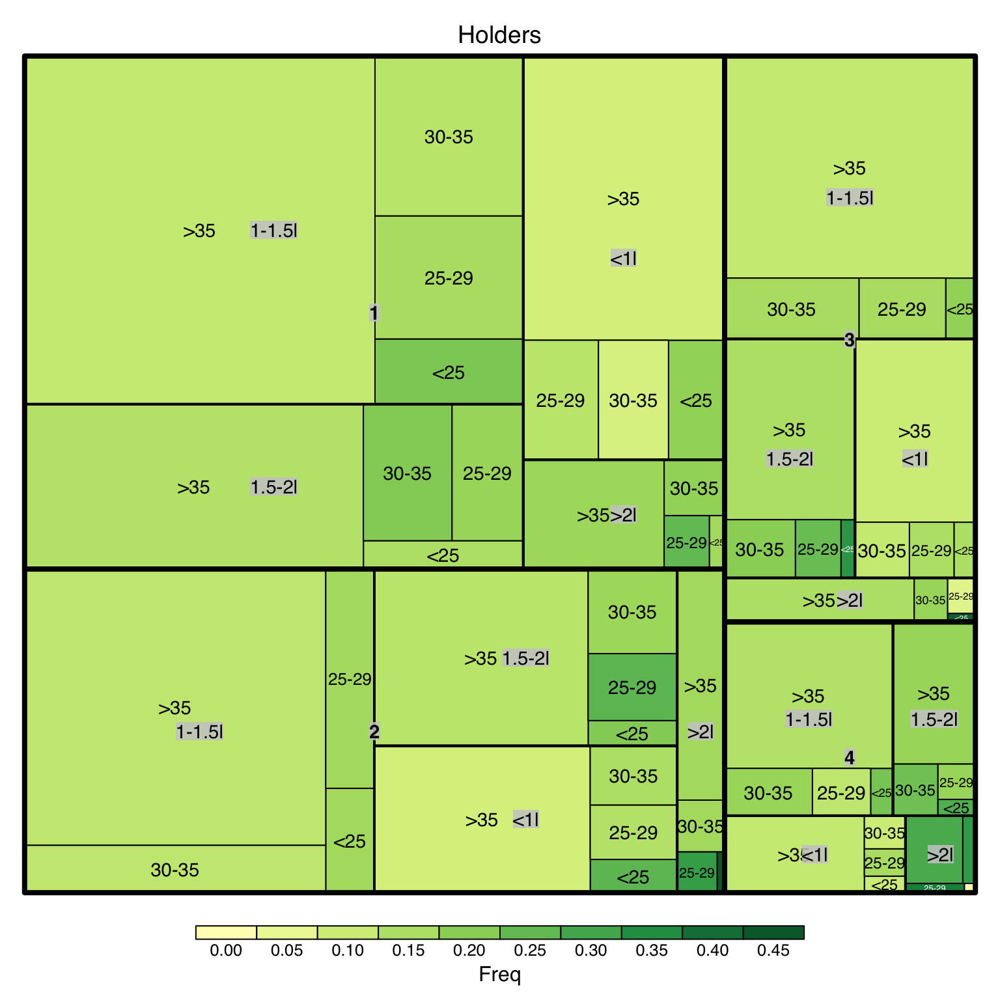
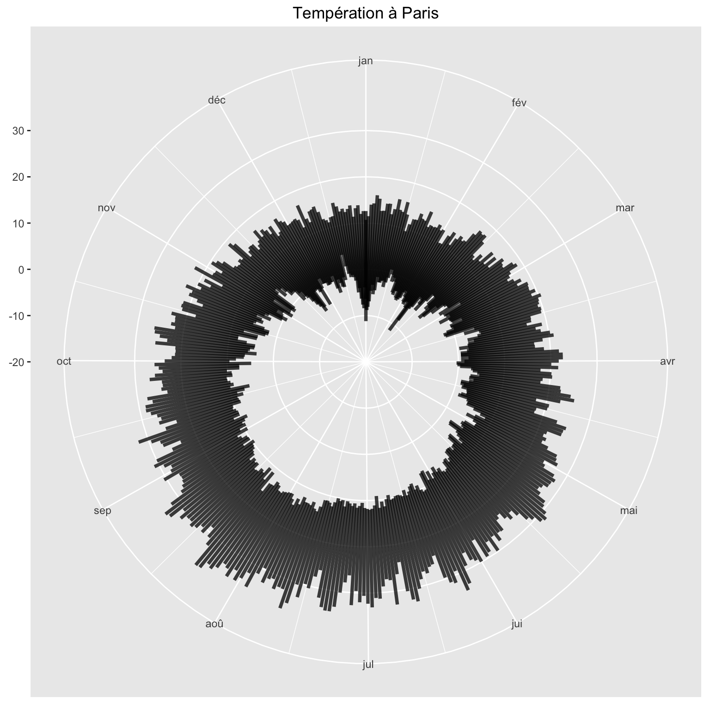
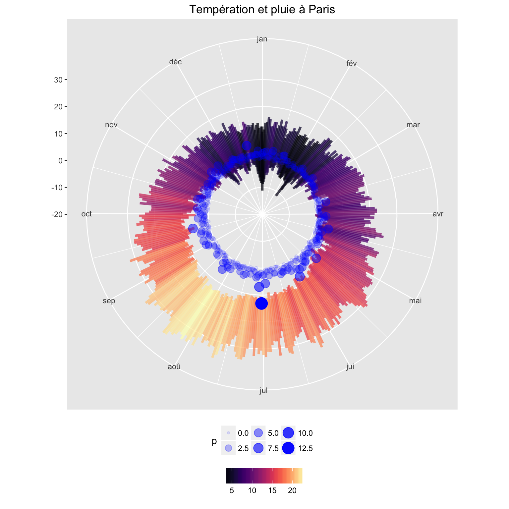
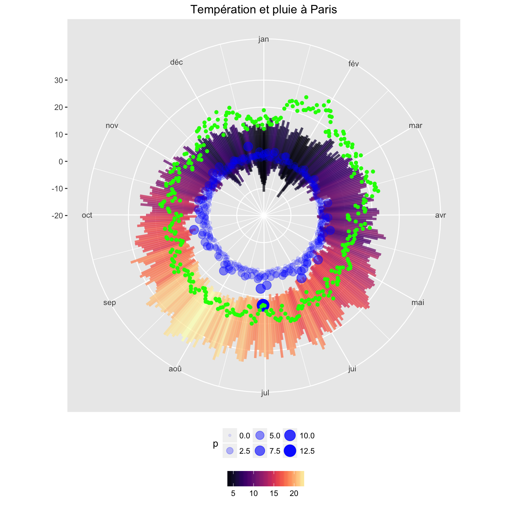

La première séance a pour but de se familiarer avec les différents graphiques réalisables avec R. Cette deuxième séance est divisée en deux parties:
Dans la continuité de la première séance, il s’agit d’utiliser les graphiques de base pour mieux représenter les données.
En fonction de votre poste, choisir une série de données et faire l’analyse visuelle des données.
Séries de données dans certains packages R
library(MASS)
head(Insurance)## District Group Age Holders Claims
## 1 1 <1l <25 197 38
## 2 1 <1l 25-29 264 35
## 3 1 <1l 30-35 246 20
## 4 1 <1l >35 1680 156
## 5 1 1-1.5l <25 284 63
## 6 1 1-1.5l 25-29 536 84head(Boston)## crim zn indus chas nox rm age dis rad tax ptratio black
## 1 0.00632 18 2.31 0 0.538 6.575 65.2 4.0900 1 296 15.3 396.90
## 2 0.02731 0 7.07 0 0.469 6.421 78.9 4.9671 2 242 17.8 396.90
## 3 0.02729 0 7.07 0 0.469 7.185 61.1 4.9671 2 242 17.8 392.83
## 4 0.03237 0 2.18 0 0.458 6.998 45.8 6.0622 3 222 18.7 394.63
## 5 0.06905 0 2.18 0 0.458 7.147 54.2 6.0622 3 222 18.7 396.90
## 6 0.02985 0 2.18 0 0.458 6.430 58.7 6.0622 3 222 18.7 394.12
## lstat medv
## 1 4.98 24.0
## 2 9.14 21.6
## 3 4.03 34.7
## 4 2.94 33.4
## 5 5.33 36.2
## 6 5.21 28.7library(Ecdat)
head(HI)## whrswk hhi whi hhi2 education race hispanic experience kidslt6 kids618
## 1 0 no no no 13-15years white no 13.0 2 1
## 2 50 no yes no 13-15years white no 24.0 0 1
## 3 40 yes no yes 12years white no 43.0 0 0
## 4 40 no yes yes 13-15years white no 17.0 0 1
## 5 0 yes no yes 9-11years white no 44.5 0 0
## 6 40 yes yes yes 12years white no 32.0 0 0
## husby region wght
## 1 11.960 northcentral 214986
## 2 1.200 northcentral 210119
## 3 31.275 northcentral 219955
## 4 9.000 northcentral 210317
## 5 0.000 northcentral 219955
## 6 15.690 northcentral 208148head(Mofa)## capexp gdp sales nbaf netinc
## Belgium 2.00 0.8524 2.12 4.82 11.5
## Denmark 3.00 0.5700 0.15 1.24 0.1
## France 3.00 5.3726 2.70 9.08 0.4
## Germany 24.00 6.6299 5.35 10.85 9.1
## Greece 0.25 0.3395 0.02 0.79 0.1
## Ireland 1.00 0.1718 0.29 2.15 5.1library(evir)
data(danish)
head(danish)## [1] 1.683748 2.093704 1.732581 1.779754 4.612006 8.725274# str(danish)
# typeof(danish)
# plot(danish)Les données sont sur les leurs sites
L’Institut des Actuaires a organisé deux pricing games, et les données peuvent être utilisées:
Le treemap permet de visualiser la composition d’un portefeuille.
Insurance## District Group Age Holders Claims
## 1 1 <1l <25 197 38
## 2 1 <1l 25-29 264 35
## 3 1 <1l 30-35 246 20
## 4 1 <1l >35 1680 156
## 5 1 1-1.5l <25 284 63
## 6 1 1-1.5l 25-29 536 84
Un graphique circulaire permet de mettre en évident la périodicité des données.
Les données météorologiques peuvent être utilisées dans l’analyse des sinistres en assurance.
TN=data.table(read.table("data/TN_STAID000038.txt",sep=",",header=TRUE,skip=19))
TX=data.table(read.table("data/TX_STAID000038.txt",sep=",",header=TRUE,skip=19))
RR=data.table(read.table("data/RR_STAID000038.txt",sep=",",header=TRUE,skip=19))
PP=data.table(read.table("data/PP_STAID000038.txt",sep=",",header=TRUE,skip=19))
TG=data.table(read.table("data/TG_STAID000038.txt",sep=",",header=TRUE,skip=19))
data=Reduce(function(x, y) merge(x, y, all=TRUE,by="DATE"), list(TN, TX, RR,PP))
data=data[Q_PP==0,]
data[,Date:=as.Date(paste0(substr(data[,DATE],7,8),"/",
substr(data[,DATE],5,6),"/",
substr(data[,DATE],1,4)),"%d/%m/%Y")]
data[,mj:=as.Date(substr(data[,DATE],5,8),"%m%d")]
data[,TN:=TN/10]
data[,TX:=TX/10]
data[,PP:=PP/10]
data[,RR:=RR/10]
data=data[(nrow(data)-365*10):(nrow(data)),]data2=data[,.(tmin=min(TN),tmax=max(TX),tm=mean((TN+TX)/2),
p=mean(RR),
h=mean(PP)-1000),by=mj]
rp=ggplot() +
geom_linerange(data=data2, aes(mj,
ymin = tmin,
ymax=tmax),size = 1.3, alpha = 0.75) +
scale_color_viridis(NULL, option = "A") +
scale_x_date(labels = date_format("%b"), breaks = date_breaks("month")) +
ylim(-20, 38) +
labs(title = "Températion à Paris",
x = NULL, y = NULL) +
coord_polar() +
theme(legend.position = "bottom")
rp
rp=ggplot() +
geom_linerange(data=data2, aes(mj,
ymin = tmin,
ymax=tmax,color=tm),size = 1.3, alpha = 0.75) +
scale_color_viridis(NULL, option = "A") +
scale_x_date(labels = date_format("%b"), breaks = date_breaks("month")) +
ylim(-20, 38) +
labs(title = "Températion et pluie à Paris",
x = NULL, y = NULL) +
coord_polar() +
theme(legend.position = "bottom")+
geom_point(data=data2,aes(mj,p,size=p,alpha=p),colour="blue")
rp
data2=data[,.(tmin=min(TN),tmax=max(TX),tm=mean((TN+TX)/2),
p=mean(RR),
h=mean(PP)-1000),by=mj]
data2## mj tmin tmax tm p h
## 1: 2016-01-03 -8.1 14.0 4.500000 3.150000 15.89000
## 2: 2016-01-04 -6.9 14.3 4.505000 0.920000 14.46000
## 3: 2016-01-05 -4.6 16.1 5.520000 3.380000 13.67000
## 4: 2016-01-06 -3.3 15.4 6.095000 1.660000 13.75000
## 5: 2016-01-07 -5.3 12.8 6.405000 1.320000 15.86000
## ---
## 362: 2016-12-30 -3.9 12.6 4.525000 2.370000 13.52000
## 363: 2016-12-31 -6.4 10.7 4.355000 2.780000 12.04000
## 364: 2016-01-01 -11.2 12.6 3.538889 1.466667 18.86667
## 365: 2016-01-02 -8.8 11.5 3.572222 1.733333 16.64444
## 366: 2016-02-29 4.0 16.7 8.316667 1.866667 22.13333rp=ggplot() +
geom_linerange(data=data2, aes(mj,
ymin = tmin,
ymax=tmax,color=tm),size = 1.3, alpha = 0.75) +
scale_color_viridis(NULL, option = "A") +
scale_x_date(labels = date_format("%b"), breaks = date_breaks("month")) +
ylim(-20, 38) +
labs(title = "Températion et pluie à Paris",
x = NULL, y = NULL) +
coord_polar() +
theme(legend.position = "bottom")+
geom_point(data=data2,aes(mj,p,size=p,alpha=p),colour="blue")+
geom_point(data=data2,aes(mj,h),colour="green")
rp
Dans le cadre d’analyse des sommes assurées, il est intéressant d’analyser les prix de marché des voitures.
Plusieurs sources de données sont possibles: - Cotes de voitures - Prix des concessionnaires des véhicules neufs - Prix des annonces de vente des véhicules d’occasion
L’étude sur les prix des annonces des voitures d’occasion utilise quelques graphiques classiques (nuages de points) pour montrer les relations entre les différentes variables.
Il est possible d’approfondir l’étude pour faire un projet.
De même, il est possible d’étudier les prix immobiliers:
L’exemple suivant porte sur l’analyse des avis clients des produits d’assurance. Des études de données textuelles peuvent être faites sur certaines données (projet sur Airbnb)
Pour les données météorologiques, on peut choisir une ville donnée
Pour les données sur les accidents
Dans les deux cas, la situation géographique est très importante. Pour vous préparer la prochaine séance, vous pouvez lire la documentation sur leafet pour R.
Pour les données concernant la population, on peut utiliser les pyramides
Copyright © 2016 DatavISUP